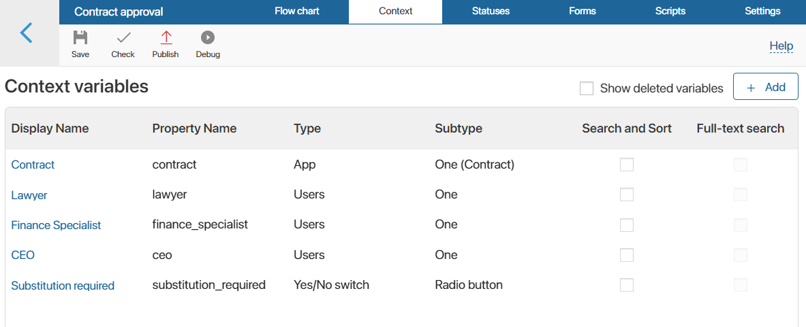
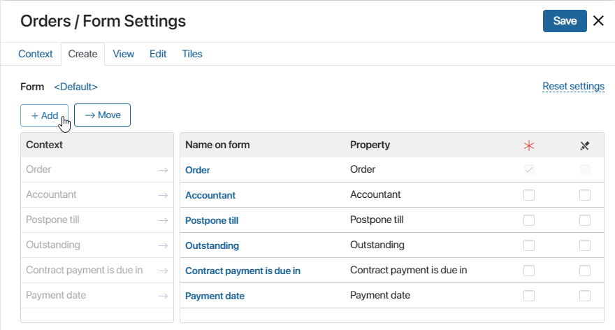
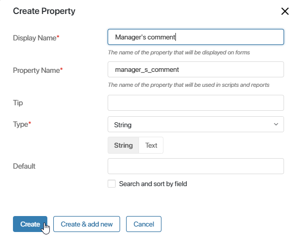
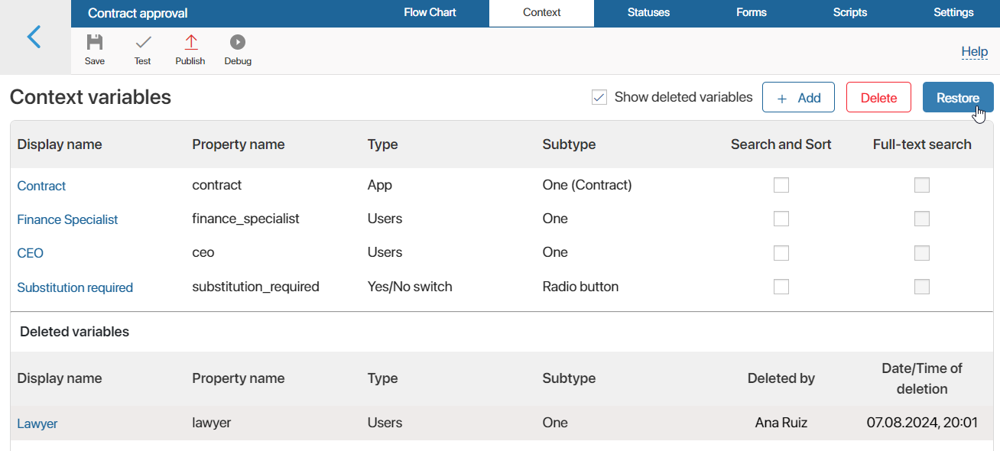
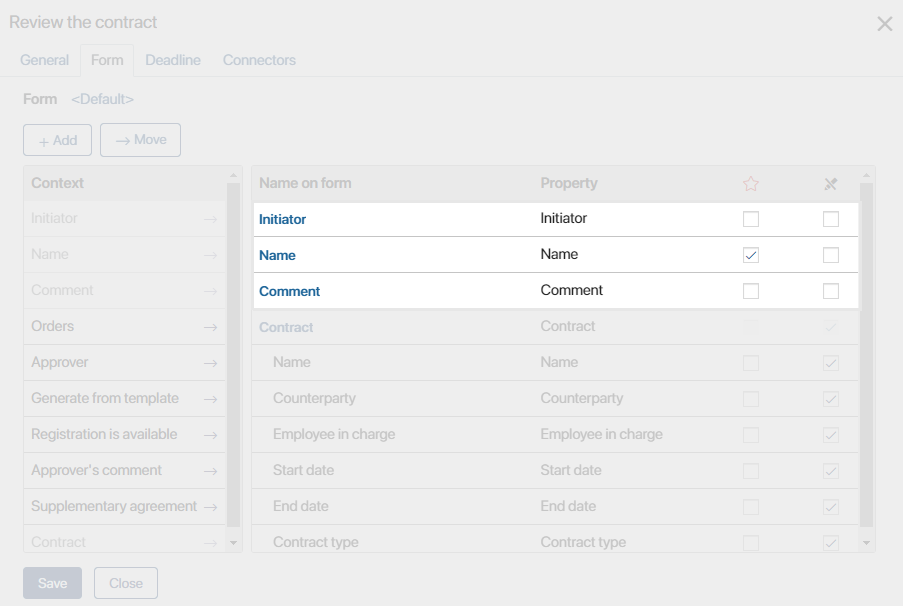
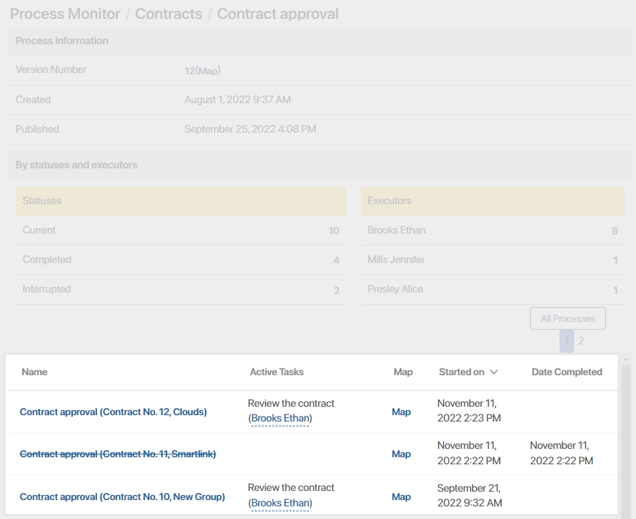
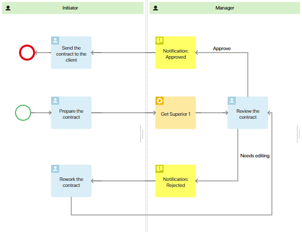
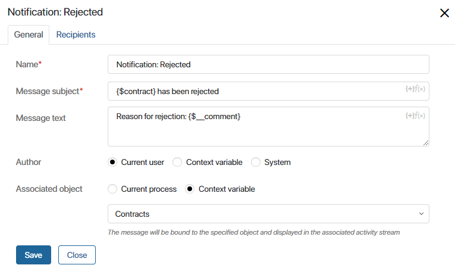

The process context is all the data that is created, modified, and saved during the execution of a business process. For instance, it can include information about participants, files, executors’ comments, contractors, etc. This data is stored in variables. Their values are defined either by the users during the process, or automatically by the system.
Process context contains custom variables and system variables.
Custom variables
To view the list of all custom context variables, in Administration > Business Processes, click on the process name and go to the Context tab.

- Display Name. Name of the variable that is used on the task form, in the start event, etc.
- Property Name. Name of the variable that is used when working with the API, forms, etc.
- Type. Type of data that the variable stores.
- Subtype. Additional parameter of the selected data type.
- Search and Sort. If you check this box, the value of the variable can be used as a search parameter.
- Full-text search. If you check this box, the value of the variable will be used in full-text search.
Please note that if the process is created within an app, a variable linked with this app is automatically added to the process.
When modeling a process, you can add variables from its context to tasks and notifications.
To display the variables in an app item associated with the process instance, use the Edit App Item activity. Also, you need to create properties of the same type in the app itself and assign them the values from the process variables.
The variables and their values used in the process are displayed on the process instance page on the Context tab.
How to add a custom variable
There are several ways to create a new variable:
- On the Context tab, in the upper right corner, click on the +Add button.
- In the settings of the Task or the Start event, open the Form tab. In the upper left corner, click the +Add button. Variables added in this way will also be available on the Context tab.

- In addition, context variables can be created in the settings of some graphical elements. For example, in swimlanes and statuses, where some parameters are defined by a variable.
After you click the +Add button, a window will open. Fill out the fields to create a variable:

- Display name*. Name of the variable that will be displayed on the forms of tasks, events, etc.
- Property name*. Name of the variable that will be used when working with the API, scripts, etc.
- Tip. Here you can specify additional information about the variable. For example, how its value is set.
- Type*. Type of data that the variable stores. For each data type, you can specify additional parameters, so the set of fields in the lower part of the window may vary.
начало внимание
Once a variable is saved, you will not be able to change its type.
конец внимание
Actions with a custom variable on the Context tab
You can select a variable and then apply the available actions to it:
- Edit. Click on its name and change it.
- Delete. If you want to delete several variables at once, press and hold the Ctrl key on the keyboard and select them.
- Restore a deleted variable. Enable the Show deleted variables option, select the required string in the list that appears and click Restore.
You can also delete a variable from this list permanently with no possibility of recovering it. Please note that starting from version 2025.3, context variables can only be completely deleted before the business process is published. If a process version is published, assign unique codes to new variables when creating them.

- Copy to clipboard. Move the created variable to the context of another business process, for example, to reuse a property with complex settings, such as Table. To do this, select the variable and click the Copy to Clipboard button that appears. Then switch to the display mode of another process and add the variable reference to its context by clicking the Paste from Clipboard button. For the transferred variable, you cannot change the property name used in scripts and the type. Since you cannot use properties with the same code in a process, you cannot copy the variable and paste it into the context of the same process.
System variables
Each business process contains system context variables added by default. They are not shown in the list of variables on the Context tab, but they can be used during process modeling, for instance, in scripts, in templates, and on task forms.

Initiator variable
The Initiator variable (code: __createdBy) is stored in the dynamic swimlane added to the process diagram by default. It stores the user who started the process. The variable can be used further, for example, on task forms and in scripts.
Name variable
The Name variable (code: __name) stores the name of the business process instance. For more information on how you can name instances, see the Settings tab article.
The variable can be used when writing scripts as well as in process elements (for example, to specify the subject in a Notification). Moreover, data from this property will be displayed in Administration > Process Monitor.

Started on variable
The Started on variable (code: __createdAt) stores the date the process instance was created. This property can only be used in scripts. Moreover, the property’s data is displayed in Administration > Process Monitor.
Comment variable
The Comment variable (code: __comment) can be used in scripts and business process elements (for example, on forms that need to be filled out in order to proceed down a certain connector). Only one value can be written to this variable. It is not saved in the process context, and it won’t be displayed on the forms of other tasks. The value of the variable can be shown in the activity stream of the process or object associated with the process using the Notification activity.
Here’s an example of how you can use this property in the Contract approval business process.

When the initiator of the process prepares the contact, the manager gets the task to review it. From this point, the process can go along one of the paths: Approve or Needs editing.
Let’s open the connectors’ settings. In the Confirmation field, let’s select the Form option and click the Configure form button. We’ll add the Comment system variable to the form and mark it a required field. Now the manager will have to enter a comment to complete the task.
To pass the manager’s comment to the contract’s activity stream, we’ve added the Notification activity to the process diagram. In the Message text field, we’ll add the Comment variable by clicking on {+} in the right corner and selecting it from the list.
In the Associated object field, let’s select Context variable and choose the Contracts app. Now the comment that the manager leaves when finishing the task will be saved in the app item’s activity stream. You will be able to see the comment’s text on the sidebar of the contract’s page whenever you want.

The manager can send the contract for correction several times. Each time, the manager will leave a comment, and the variable will be assigned a new value. This value will be displayed in the notification sent to the initiator and in the contract’s activity stream.
Note that if several employees review a contract, the Comment variable will store the most recent comment. To pass comments written by each approver and display them on task forms, create custom properties of the String (Text) type for each of these employees.
Found a typo? Select it and press Ctrl+Enter to send us feedback